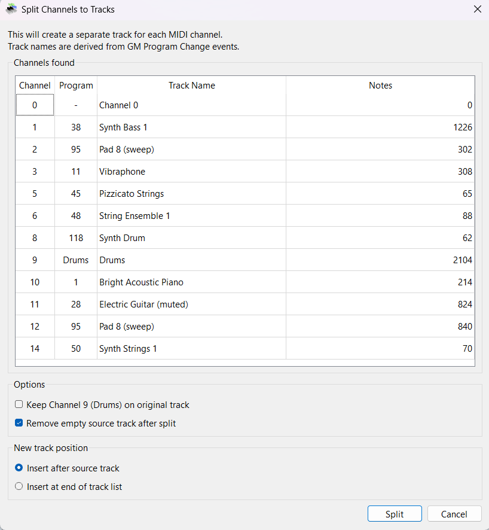
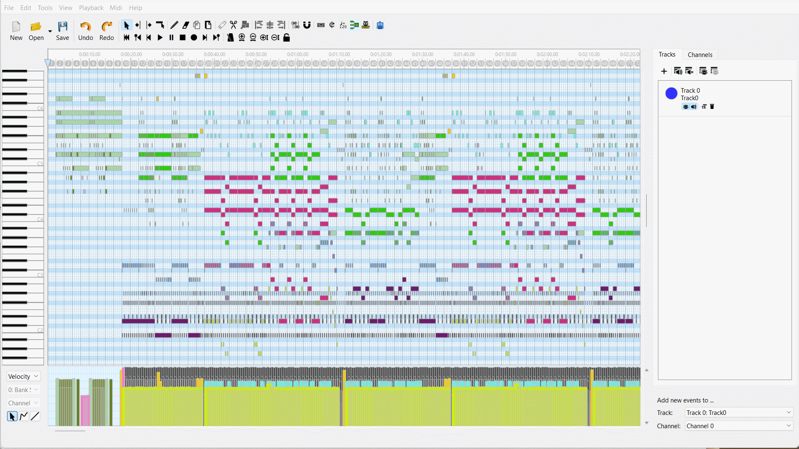

Split Channels to Tracks Split Channels to Tracks
Split Channels to Tracks Split Channels to TracksThe Split Channels to Tracks tool converts a single-track multi-channel MIDI file (Format 0) into one track per channel (Format 1 style). This is essential for working with GM MIDI files downloaded from the internet, where all instruments are crammed into a single track — making it impossible to hide, solo, recolor, or edit individual instrument parts.
💡 Find it in: Toolbar button or menu Tools → Split Channels to Tracks | Shortcut: Ctrl+Shift+E
Select the source track (the current edit track), then run the tool. It scans all 16 MIDI channels, identifies which channels have events on that track, and creates a separate track for each active channel. Track names are automatically derived from GM Program Change events.
Scans channels 0–15 for events on the source track. Counts notes and reads the first Program Change to identify the instrument.
Shows a dialog with a table of all active channels, their program numbers, GM instrument names, and note counts.
Creates a new track for each channel and moves all events from the source track to their corresponding channel track.
Optionally removes the now-empty source track. The entire operation is a single undo action (Ctrl+Z).

The Split Channels dialog showing a preview of all active channels with instrument names
The dialog shows:
| Option | Default | Description |
|---|---|---|
| Keep Channel 9 (Drums) on original track | Unchecked | When checked, drum events stay on the source track instead of getting their own track. Useful if you want to keep drums with meta events. |
| Remove empty source track after split | Checked | Deletes the original track if no events remain on it after the split. Source tracks with meta events (tempo, time signature) are preserved automatically. |
| Insert after source track | Selected | New tracks are inserted immediately after the source track in the track list. |
| Insert at end of track list | — | New tracks are appended at the bottom of the track list. |

Splitting a single-track GM file into separate instrument tracks
After splitting, each instrument gets its own track with a descriptive name (e.g., "Synth Bass 1", "Vibraphone", "Drums"). You can now hide, solo, mute, recolor, and edit each instrument independently.
Track names are determined automatically based on:
| Channel | Naming Strategy |
|---|---|
| Channel 9 | Always named "Drums" |
| Channels with Program Change | Named using the GM instrument table (e.g., program 38 → "Synth Bass 1") |
| Channels without Program Change | Named "Channel N" (fallback) |
{kind=link}
{kind=link}